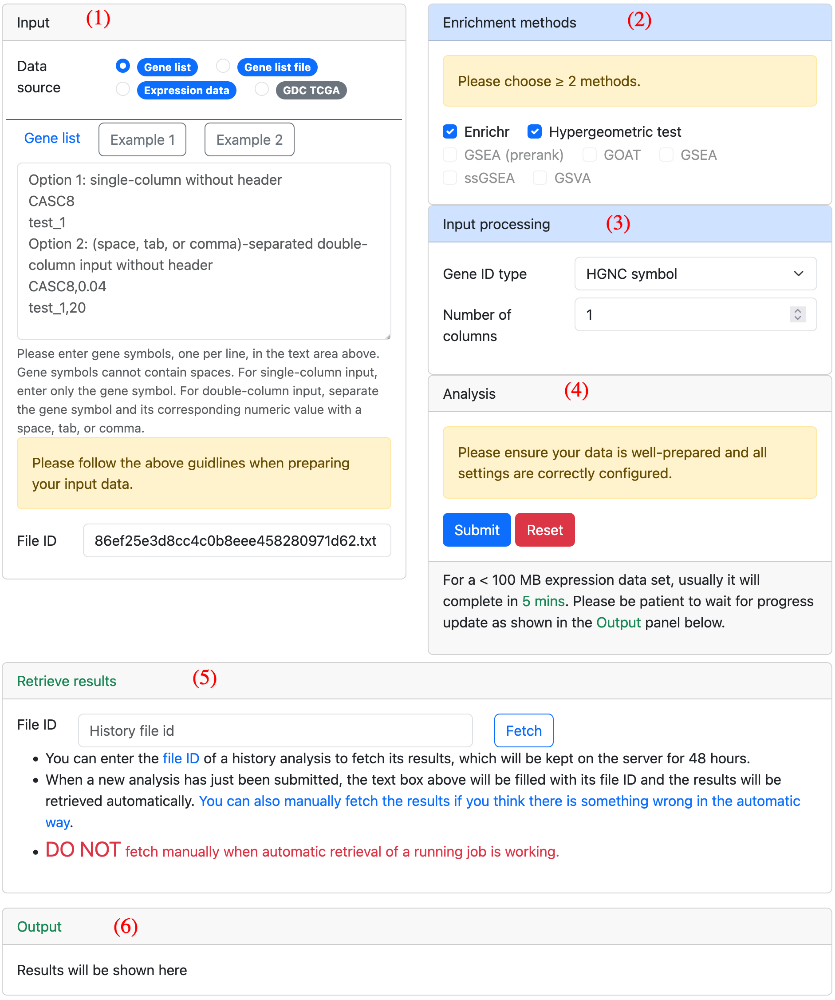
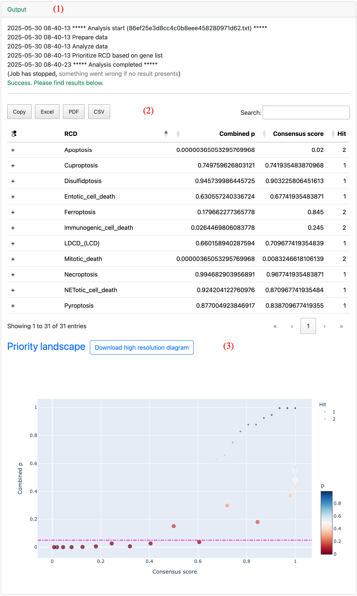

Interface
The tool interface is organized into a series of panels. As shown in the image below. Panel 1 receives inputs from the user. Panel 2 and 3 are used for analysis configuration. Panel 4 provides buttons to submit and reset the analysis. Panel 5 retrieves history analysis results. Panel 6 shows analysis outputs.
Analyze
Prepare data
The data should be prepared according to its source type.
For a gene list, it can be in either a single-column or double-column format. The single-column gene list typically consists of a list of gene symbols, while the double-column gene list includes a second column for ranking metrics.
For expression data, it is represented as a gene expression matrix in plain text format, usually in a TSV or CSV file. Please remember to prepare an annotation file that defines the conditions of the samples, with the sample orders in both files matched.
For the GDC TCGA dataset, we have pre-processed the data for users. It is ready to use out of the box, with no preparation required.
Set parameters
The content shown in the parameter panels depends on the type of data source. We have tuned the parameters so that they will work smoothly and robustly in most cases. The parameters are also self-intuitive and easy to configure. Where special attention is required, a hint is provided alongside.
Run analysis
When data are correctly provided and the parameters are properly set, please click the submit button to launch the analysis. If you need to restart the whole analysis, please click the reset button to reset the tool.
Retrive results
Analysis results from the past 48 hours can be retrieved using the Retrieve Results panel. All you need to do is enter the file ID of a previous analysis. For newly submitted jobs, results will be retrieved automatically. You only need to manually retrieve results if the automatic process goes wrong.
Examine outputs
All results are displayed in the Output panel, as shown in the example below. Panel 1 displays log information related to the analysis. Panel 2 contains the results data table. The buttons in the top-left corner can be used to export the data to an XLSX, CSV, or PDF file. Panel 3 presents a interactive diagram where the priority of RCD can be easily perceived.
